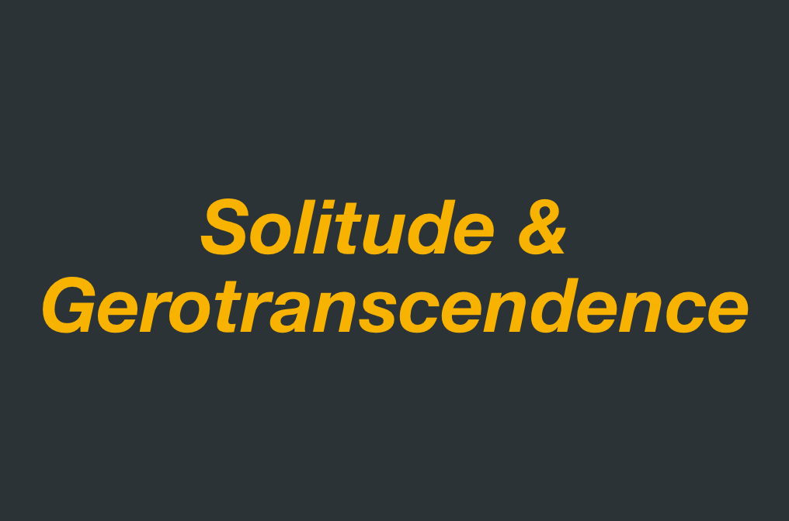
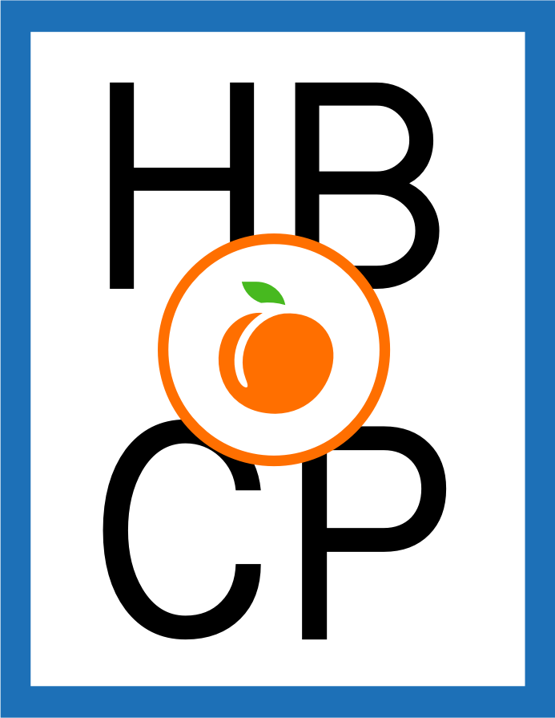
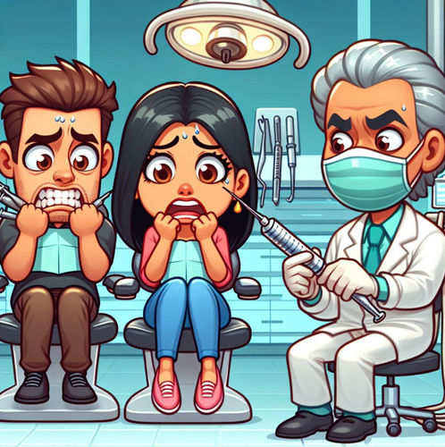
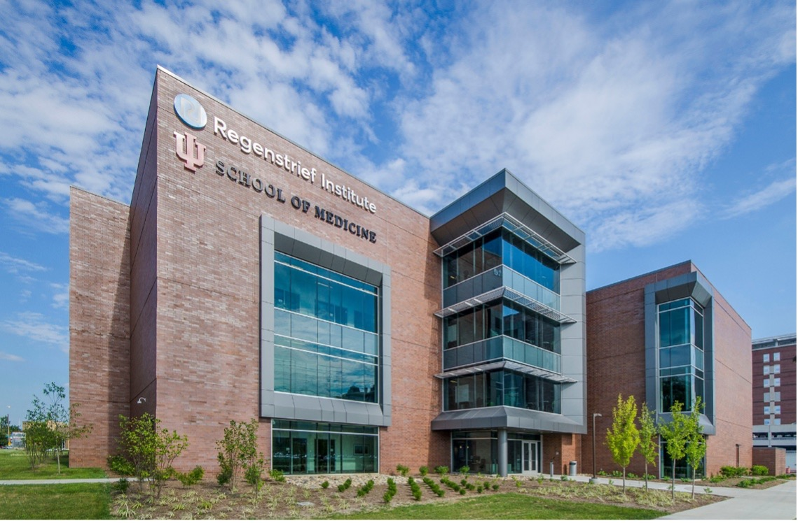
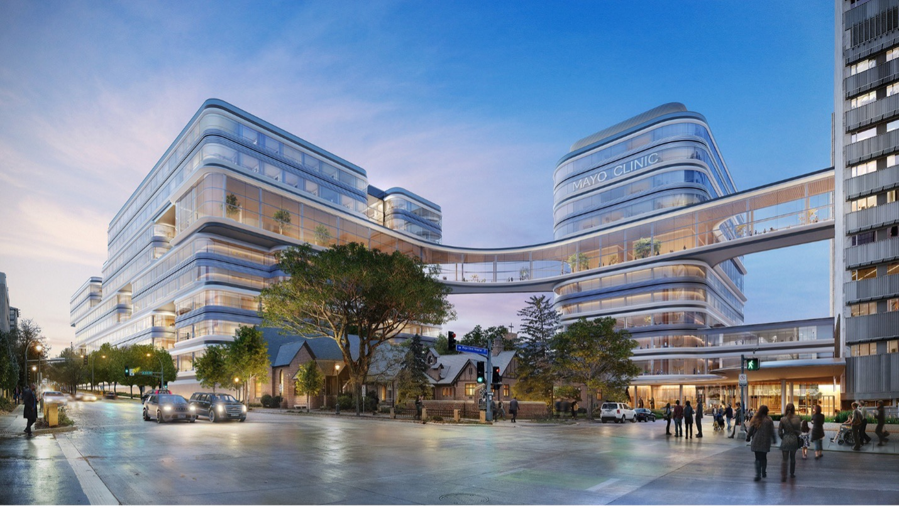

NIA-funded U24 Coordinating Center · U24AG088019
The Accelerate BASSO Network Center serves as the backbone of the U01 Research Network — facilitating collaboration, providing ontology-related technical expertise, and sharing the network's resources with the wider research community.
The Accelerating Behavioral and Social Science through Ontology (ACCELERATE-BASSO) Network and Coordination Center is a partnership of six institutions building shared, reusable ontology standards for the behavioral and social sciences.
For Network
Teams
Explore the
Resources
About the
Network
4
U01 Projects
across four research domains
2
Working Groups
best practices & resource sharing
6
Partner Institutions
across the U.S. and U.K.
9
Ontologies
in the Resource Portal
19
Publications
catalogued to date
40
Portal Resources
tools, datasets & communities
Counts as of July 2026, from the BASSO Resource Portal
The Accelerating BehAvioral Social Science through Ontology (ACCELERATE-BASSO) Network and Coordination Center (DCC) will serve as a backbone for the U01 Network and be used to (1) facilitate collaboration and cross-project learning; (2) provide ontology-related technical, computational, and informatics expertise and support; (3) facilitate dissemination of resources and training to support ontology expansion, development, and use; and (4) provide active outreach and coordination with relevant stakeholders to increase understanding of and demand for BSSR ontology-related tools and resources.
1)
Provide administrative and logistical support for the U01 Research Network.
2)
Develop a common technical framework with standard operating procedures (SOPs) to guide the development of BSSR ontologies in the U01 Research Network.
3)
Develop a “toolbox” of resources through which the products of the Network can be shared with and adopted for use by all the relevant communities.
This report describes how ontologies support science and its application to real-world problems.
It also details how ontologies function, how they can be engineered to better support the behavioral sciences, and the resources needed to sustain their development and use to help ensure the maximum benefit from investment in behavioral science research. The full report was published in May 2022.

U01AG088074
Promoting Health Aging through Semantic Enrichment of Solitude Research
Learn moreU01AG088076
Standardizing and Harmonizing Behavioral and Social Science Research Factors in Alzheimer's Disease through Ontology-Based Approaches
Learn more
U01CA291884
Advancing Prevention Research in Cancer through Ontology Tools (The APRICOT Project)
Learn more
U01DE033978
Ontology of Dental care-related Fear, Anxiety, and/or Phobia
Learn moreMinimal ontology development guidelines, a white paper on ontology interoperability, and the Hootation evaluation tool.
Learn moreResource-sharing policy and procedures, the FAIR study portal, and training materials and educational activities.
Learn more
Indiana University / Regenstrief Institute
University at Buffalo

Mayo Clinic
University of Florida
Stanford University
University College London
Ontologies, publications, tools, and communities for the behavioral and social sciences — catalogued in one place.
Visit the Resource Portal